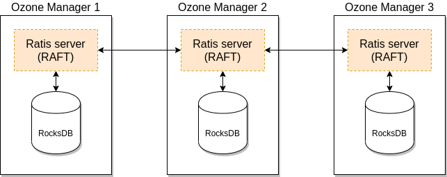
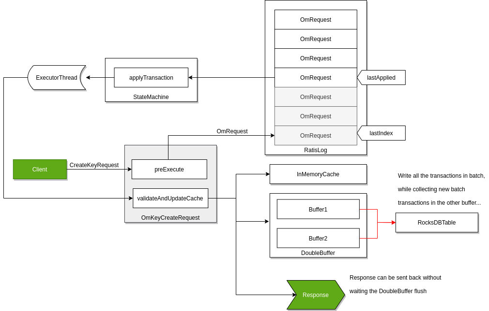

OM High Availability
Ozone has two metadata-manager nodes (Ozone Manager for key space management and Storage Container Manager for block space management) and multiple storage nodes (Datanode). Data is replicated between Datanodes with the help of RAFT consensus algorithm.
To avoid any single point of failure the metadata-manager nodes also should have a HA setup.
Both Ozone Manager and Storage Container Manager supports HA. In this mode the internal state is replicated via RAFT (with Apache Ratis)
This document explains the HA setup of Ozone Manager (OM) HA, please check this page for SCM HA. While they can be setup for HA independently, a reliable, full HA setup requires enabling HA for both services.
Ozone Manager HA
A single Ozone Manager uses RocksDB to persist metadata (volumes, buckets, keys) locally. HA version of Ozone Manager does exactly the same but all the data is replicated with the help of the RAFT consensus algorithm to follower Ozone Manager instances.

Client connects to the Leader Ozone Manager which process the request and schedule the replication with RAFT. When the request is replicated to all the followers the leader can return with the response.
Configuration
One Ozone configuration (ozone-site.xml) can support multiple Ozone HA cluster. To select between the available HA clusters a logical name is required for each of the clusters which can be resolved to the IP addresses (and domain names) of the Ozone Managers.
This logical name is called serviceId and can be configured in the ozone-site.xml
<property>
<name>ozone.om.service.ids</name>
<value>cluster1</value>
</property>
For each of the defined serviceId a logical configuration name should be defined for each of the servers.
<property>
<name>ozone.om.nodes.cluster1</name>
<value>om1,om2,om3</value>
</property>
The defined prefixes can be used to define the address of each of the OM services:
<property>
<name>ozone.om.address.cluster1.om1</name>
<value>host1</value>
</property>
<property>
<name>ozone.om.address.cluster1.om2</name>
<value>host2</value>
</property>
<property>
<name>ozone.om.address.cluster1.om3</name>
<value>host3</value>
</property>
The defined serviceId can be used instead of a single OM host using client interfaces
For example with o3fs://
hdfs dfs -ls o3fs://bucket.volume.cluster1/prefix/
Or with ofs://:
hdfs dfs -ls ofs://cluster1/volume/bucket/prefix/
Implementation details
Raft can guarantee the replication of any request if the request is persisted to the RAFT log on the majority of the nodes. To achieve high throughput with Ozone Manager, it returns with the response even if the request is persisted only to the RAFT logs.
RocksDB instance are updated by a background thread with batching transactions (so called “double buffer” as when one of the buffers is used to commit the data the other one collects all the new requests for the next commit.) To make all data available for the next request even if the background process has not yet written them, the key data is cached in the memory.

The details of this approach are discussed in a separate design doc but it’s an integral part of the OM HA design.
OM Bootstrap
To convert a non-HA OM to be HA or to add new OM nodes to existing HA OM ring, new OM node(s) need to be bootstrapped.
Before bootstrapping a new OM node, all the existing OM’s on-disk configuration file (ozone-site.xml) must be updated with the configuration details of the new OM such as nodeId, address, port etc. Note that the existing OMs need not be restarted. They will reload the configuration from disk when they receive a bootstrap request from the bootstrapping node.
To bootstrap an OM, the following command needs to be run:
ozone om [global options (optional)] --bootstrap
The bootstrap command will first verify that all the OMs have the updated configuration file and fail the command otherwise. This check can be skipped using the force option. The force option allows to continue with the bootstrap when one of the existing OMs is down or not responding.
ozone om [global options (optional)] --bootstrap --force
Note that using the force option during bootstrap could crash the OM process if it does not have updated configurations.
Automatic Snapshot Installation for Stale Ozone Managers
Sometimes an OM follower node may be offline or fall far behind the OM leader’s raft log. Then, it cannot easily catch up by replaying individual log entries. The OM HA implementation includes an automatic snapshot installation and recovery process for such cases.
How it works:
- Leader determines that the follower is too far behind.
- Leader notifies the follower to install a snapshot.
- The follower downloads and installs the latest snapshot from the leader.
- After installing the snapshot, the follower OM resumes normal operation and log replication from the new state.
This logic is implemented in the OzoneManagerStateMachine.notifyInstallSnapshotFromLeader();
see the code
in Release 2.0.0.
Note that this Raft Snapshot, used for OM HA state synchronization, is distinct from Ozone Snapshot, which is used for data backup and recovery purposes.
In most scenarios, stale OMs will recover automatically, even if they have missed a large number of operations.
Manual intervention (such as running ozone om --bootstrap) is only required when adding a new OM node to the cluster.
Important Note on Ozone Manager (OM) Disk Space for Snapshots
When an Ozone Manager (OM) acts as a follower in an HA setup, it downloads snapshot tarballs from the leader to its local metadata directory. Therefore, always ensure your OM disks have at least 2x the current OM database size to accommodate the existing data and incoming snapshots, preventing disk space issues and maintaining cluster stability.
References
- Check this page for the links to the original design docs
- Ozone distribution contains an example OM HA configuration, under the
compose/ozone-om-hadirectory which can be tested with the help of docker-compose. - Apache Ratis State Machine API documentation